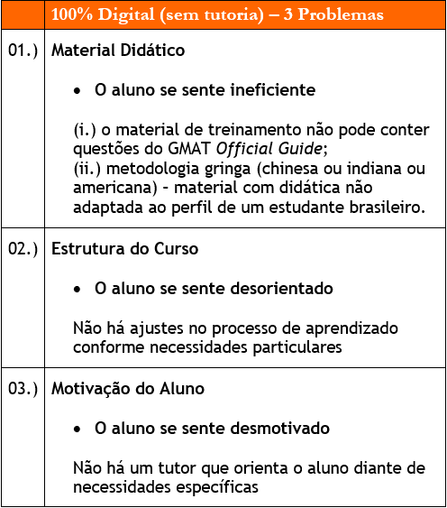
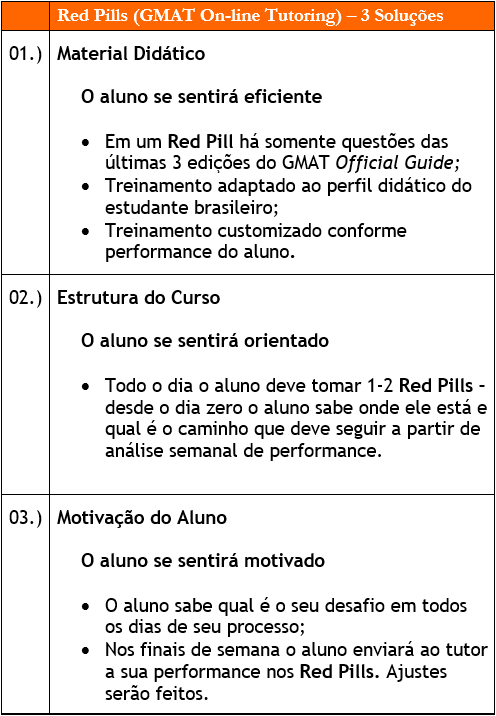

Megaron GMAT On-line Tutoring
Nicholas Megaron, tudo bem? Meu nome é Nicholas. Pretendo fazer o meu MBA no ano que vem. Gostaria de conhecer detalhes sobre a sua preparação para o GMAT.
Megaron Nicholas, como vai? Agradeço o seu interesse nos serviços da Megaron.
O trabalho da Megaron foi referenciado por dois amigos que falaram que você tem uma preparação para o GMAT meio que diferente do que é ofertado por aí, isso?
Verdade, Nicholas. O estudante encontrará no mercado, basicamente, duas opções de cursos preparatórios para o GMAT: (i.) self study online – aulas gravadas e listas de exercícios/simulados ou (ii.) tutoring - aulas particulares ou em grupo. A Megaron oferece o GMAT On-line Tutoring: (i.) on-line: preparação com recursos digitais; e (ii.) tutoring: preparação com um professor particular, tutor, acompanhando de perto o aprendizado do aluno. Essencialmente, a preparação é diferente porque une (i.) com (ii.)
Ótimo. Estou bem no início do processo, Megaron. Pretendo tirar o meu 720+ antes de partir para o application. Gostaria de entender se a sua metodologia se encaixa com o meu perfil.
Sim, concordo: é muito importante entender o perfil antes de fazer recomendações. Explico, claro, a metodologia dos Red Pills, que é como eu chamo o meu GMAT On-line Tutoring.
Intro
Ótimo. Algumas pessoas com quem conversei disseram que você só mexia com application e não com preparação para testes.
Só alunos mais antigos sabem que o meu começo nesse mundo do MBA application foi com aulas para o GMAT em 2000. Parei de dar aulas em 2013. No ano passado, aproveitei a pandemia e adaptei a minha metodologia antiga, analógica, para a nova realidade do “novo normal.” Agora com os Red Pills, a Megaron volta a oferecer serviços para todas as etapas do processo de um MBA application.
Que bom. Se alguém se responsabiliza por todas as etapas do processo de application, tanto melhor, né? Prefiro centralizar os meus trabalhos com um único profissional. Mas... curiosidade minha, Megaron: parou em 2013 com o GMAT por quê, hein?
Ah, eu acreditei que não conseguiria competir com as empresas chinesas/indianas que estavam entrando no mercado de preparação on-line para o GMAT. Pensei que eles fossem oferecer bons serviços a valores imbatíveis.
Imagino que o mercado GMAT brasileiro seja muito pequeno comparado aos chineses ou indianos, mas vi que há colegas seus, brasileiros, oferecendo aulas em grupo. Parece um mercado rentável, não?
Nunca acreditei na eficiência de aulas em grupo para o GMAT. Nesse universo de MBA application, há estudantes com os mais variados perfis e necessidades. Desde a minha primeira aula de GMAT, sempre ofereci orientação individual com material customizado, ajustado conforme performance do aluno.
Não estou mais considerando aulas particulares e nem em grupo mesmo. Só estou com dúvidas se vale fazer um curso on-line, como um Magoosh ou um Manhattan da vida. Curiosidade minha: voltou com o GMAT por quê?
Muitos dos meus orientandos de application dos últimos 5-7 anos não conseguiram tirar o GMAT a tempo de aplicar para o round-1 (setembro). Isso prejudicou, claro, os alunos, bem como o meu trabalho como consultor de application. Acredito ser importante que o aluno tire o GMAT a tempo de se dedicar integralmente aos applications em julho/agosto/setembro.
Em geral, o pessoal começa a se preparar para o GMAT quando mesmo?
Fevereiro ou março. E em maio ou junho ele já estava pronto para o seu 720+. Infelizmente essa dinâmica mudou. Hoje, muito aluno bom está demorando 5-6 meses para tirar o GMAT. Muitas vezes depois de duas ou três tentativas.
E o teste não é barato, né?
US$250.00
Wow. Mas o serviço on-line, 100% digital, sem tutoring, é realmente ruim assim?
Nos últimos anos orientei alunos no application que aprovaram os serviços oferecidos pelo Magoosh/Manhattan. Conseguiram seus 720+, sem drama.
Sendo bem sincero? O que me atraiu mesmo foi o valor de um curso self study.
Verdade. Muitos alunos gastam uma fortuna com aulas particulares. Quando se oferece uma solução 100% digital, self study, sem um tutor acompanhando o processo, o valor cobrado é, relativamente, baixo.
Ah, sim, claro, outra coisa que me atraiu foi a flexibilidade, né? Enfim, deixa eu perguntar: na sua opinião, qual é o grande problema desses cursos 100% digitais, sem alguém do lado do aluno?
Conversei com muitos ex-orientandos de application que, ao final do pocesso, ficaram insatisfeitos com os serviços on-line, sem tutoring. Parece haver uma unanimidade em relação a “3 Problemas” (tabela abaixo):

Essa história deles não poderem usar questões oficiais é bem complicada. Um cara com quem conversei disse que ele fez todas as questões do GMAT Official Guide em paralelo ao Magoosh. E que ele também comprou material complementar no site oficial do GMAT.
Isso encarece e, principalmente, atrasa a preparação. No GMAT Official Guide 2021, por exemplo, mais da metade das questões são consideradas fáceis para o aluno brasileiro que vai tirar 720+. Dependendo do perfil do aluno, eu não peço para ele perder tempo com esse tipo de questão – eu ajustei os Red Pills com concentração de questões “medianas” ou “difíceis.” Em, Nicholas, o que não falta é material para treinamento na net. Todas as questões do Official Guide estão resolvidas em vídeos no Youtube. É importante que um tutor que te conhece faça a curadoria desse banco enorme de questões.
Entendi. Mas... Apesar desses problemas, você disse que para alguns de seus alunos deu tudo certo. Qual é o perfil desse aluno?
Self study sem tutoria não funciona para todos os alunos. Funciona para aquele aluno que tem disciplina férrea e vai aprendendo a identificar em que seções do GMAT ele precisa melhorar.
Entendi. Uma questão de perfil, né? E a sua preparação tem esse diferencial da tutoria e tal, isso?
A metodologia dos Red Pills é (1.) On-line + (2.) Tutoring. Essencialmente, esses cursos oferecem somente a primeira metade: self study (on-line). A Megaron, ofereço também o (2.) tutoring.
Red Pills – metodologia GMAT On-line Tutoring
Mas, Megaron, afinal, o que é a metodologia dos Red Pill?
Red Pills é a metodologia GMAT On-line Tutoring da Megaron.
Os Red Pills são desafios diários com duração de 30 minutos. Eles pretendem solucionar os “3 Problemas” de um curso 100% on-line:
Os Red Pills são desafios diários com duração de 30 minutos. Eles pretendem solucionar os “3 Problemas” de um curso 100% on-line:

Legal, Megaron, mas não estou conseguindo visualizar o que seria concretamente um Red Pill.
Vamos lá: semanalmente o aluno reservará 7 horas de estudo para o seu GMAT. O Red Pill é, na sua essência, um mini GMAT, um mock test com questões do Official Guide. Nesse espaço de tempo estão incluídos os minutos em que aluno deve corrigir seus erros (ou mesmo estudar apostilas de suporte ou listas com pontos para melhoria).
Desde o dia zero eu devo treinar em cima das questões do Official Guide em sessões cronometradas, isso?
Mega importante o aluno medir desempenho desde o diz zero do processo. O seu desafio final, Nicholas, é atingir a “performance 80%+”.
80%? Wow! Errar somente uma questão em 5?
Sim, acertar 4 em 5 questões. A tabelinha abaixo deve ser colocada na sua geladeira desde hoje, Nicholas. O aluno precisa respirar no seu dia a dia qual é a sua missão.
Ah, sim, importante medir tudo, né? Sou consultor, tenho uma plaquinha no meu quarto com o quote do Peter Drucker: “o que não pode ser medido não pode ser controlado, e o que não pode ser controlado não pode ser melhorado.” Megaron... Fale aí sobre o famoso “pequeno detalhe”: quanto custa o seu curso?
Um dos fatores que atraem os alunos a um curso self study na net é a grana, sim? Tive que encontrar uma solução em que o investimento do aluno fosse bem menor que em aulas presenciais, particulares. Hoje, consigo oferecer o meu GMAT On-line Tutoring a um valor semelhante a de um GMAT real, R$1450,00(*).
Legal, esse é o preço do curso self study do Magoosh (US$250.00), o mais barato, pelo que já pesquisei.
Sim. US$250.00 é o valor dos serviços digitais, sem tutoring. O Magoosh até oferece 6h de tutoring em paralelo, mas, nesse cenário, o valor sobe para 800 dólares.
Mas o Red Pill é preparação completa, né? Verbal e Quantitative?
Sim, claro, o GMAT é Quant + Verbal + AWA + IR. Semanalmente eu irei monitorar o seu desempenho e ajustarei os Red Pills. Todas as questões dos Red Pills têm gabarito comentado. Você pode me enviar, a qualquer momento, toda e qualquer dúvida.
E aulas mesmos? Presenciais?
As aulas que no passado eu dava presencialmente, digo, até 2013, eu as transformei para o mundo digital.
Como assim?
Todas as aulas que até 2013 eu dava para meu alunos, eu as adaptei para ensino à distância. O aluno poderá assistir as “aulas” no seu melhor momento (Nota: através de diálogos entre o Nicholas e o Megaron, todo o conteúdo do curso será semanalmente enviado ao aluno.)
Legal. Uma das vantagens do ensino à distância: é a flexibilidade. Não conseguiria garantir para um professor particular do GMAT que eu realmente assistiria aulinhas, por exemplo, todas as quintas às 19:30.
Flexibilidade é uma variável importante. Estarei disponível de segunda a sexta para qualquer dúvida em meu whatsapp.
Ótimo.
Bem, para finalizar, agora falemos de um fator fundamental na sua preparação: o seu comprometimento diário com o GMAT.
Muita gente falou sobre isso. O melhor é estudar todos os dias, né? Conversei com alguns professores particulares. Um professor pediu dedicação de 8 horas/semanais; outro, de inglês, 12 horas. Como é que é? 20 horas/semana? Trabalho 60-80h/semana e, posso garantir, minha namorada é bem ciumenta.
Como tutor de GMAT, eu não estou somente preocupado com o seu 720+, mas também com a obtenção do 720+ com o menor esforço possível. Ou seja, não me preocupo somente com a eficácia, mas com a eficiência desse seu projeto. Com material customizado e ajuste progressivo de desempenho, consigo pedir para você somente 7h/ semana.
7h/ semana? Só isso?
Sim, mas, detalhe: o aluno deve se comprometer com, no mínimo, 30 minutos/dia. É imprescindível que ele tome ao menos 1 Red Pill/dia.
30 minutos eu consigo; 1h/dia, bem difícil. O ideal seriam 2 Red Pill (2 x 30 min), isso?
Poxa, se o aluno conseguisse tomar 2 Red Pill/dia teríamos o cenário ideal. Reconheço que para muitos: impossível. 1 Red Pill/dia funciona muito bem. Ele compensará no fim de semana.
Vou arranjar 30 minutos para esse meu projeto.
Nicholas, o dia a dia do mundão lá fora é massacrante. O sistema operará contra o seu projeto pessoal. No final, o drama “conseguirei ou não o meu 720+?” se resume a uma escolha: Red Pill ou Blue Pill?
Definitivamente eu escolho Red Pill.
(*) Ótimo, Nicholas. Então, marquemos uma conversa no Google Meet? Envie sua disponibilidade para o meu whatsapp (11.95236-1412 ) ou mande um e-mail para megaron@gmail.com. Enviarei antes um descritivo detalhado dos serviços incluídos (e os não incluídos) nesse valor, R$1450,00.
Estou ansioso por iniciar meu projeto. Obrigado, Megaron.